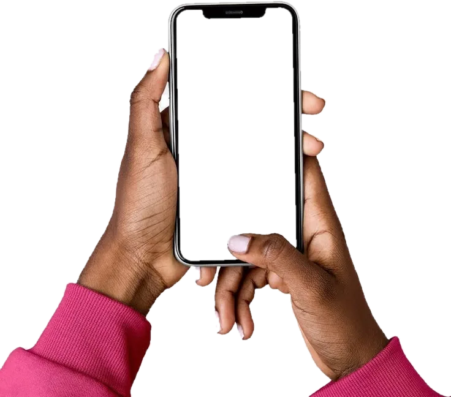
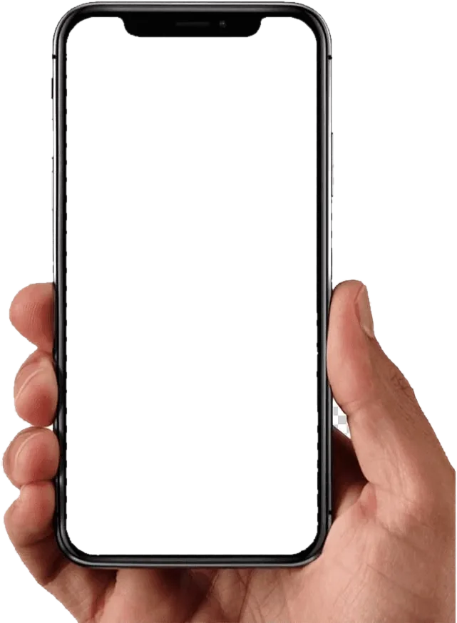

Application de suivi de pressing
Suivez vos vêtements au pressing et soyez prévenu dès qu'ils sont prêts
PressLink est l'application de suivi de commandes de pressing en Côte d'Ivoire : gratuite pour les clients, et un logiciel de gestion complet pour les pressings.
Aucun téléchargement depuis un store : l'application s'installe en un geste depuis votre navigateur (presslink.org/app).
Mes commandes
Pressing Excellence · PE-4821
PL-204518
● Prête
3 chemises · 1 costume
Total 7 500 FCFA
Total 7 500 FCFA
PL-204377
● En traitement
2 robes · 1 drap
P
PressLink
Votre commande PL-204518 est prête ✨
Votre commande PL-204518 est prête ✨

Le vrai parcours, en vidéo
Filmé dans l'application et le tableau de bord, commenté pas à pas.
Installez PressLink en 3 étapes
Pas de store : ouvrez presslink.org/app et ajoutez l'application à votre écran d'accueil.
Sur Android · Chrome
🔒 presslink.org/app
PressLink
Votre numéro de téléphone
+225 · 07 00 00 00 00
Installer PressLink
Installer
Installer l'application ?
PressLink
presslink.org
presslink.org
AnnulerInstaller
PressLink

- 1 Ouvrez presslink.org/app dans Chrome et appuyez sur « Installer ».
- 2 Confirmez avec « Installer » dans la fenêtre de Chrome.
- 3 PressLink apparaît sur votre écran d'accueil, comme une application.
Sur iPhone · Safari
🔒 presslink.org/app
PressLink
Votre numéro de téléphone
+225 · 07 00 00 00 00
‹›
⧉
PressLink
presslink.org
presslink.org
Copier
Sur l'écran d'accueil
Ajouter aux favoris
PressLink
- 1 Ouvrez presslink.org/app dans Safari et touchez Partager.
- 2 Choisissez « Sur l'écran d'accueil », puis « Ajouter ».
- 3 Ouvrez PressLink depuis son icône et connectez-vous.